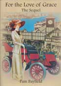

For the Love of Grace - The Sequel

Book ReviewsThose who read the first novel about Grace have been looking forward eagerly to the sequel. They will not be disappointed. This is an interesting novel, combining insights into the development of the colony around the Manly and District area just prior to the turn of the century and then in 1900 itself. A strong sense of period is not only evoked but maintained without ever breaking the flow of the novel to the extent that one feels one is having a history lesson. The writer skilfully embroiders the town so that one feels a gradual part of its very development. Fashion of the era and motor car travel is described well, as is the charm of horse drawn carriages and the custom of asking passengers to alight when going up steep hills so as to relieve the burden on the horses. It is a sympathetic drawing of the situation. The characters evolve much where we left them, but the novel stands alone, with sufficient reminders of the personnae in the first book, but picking up on this book will certainly make the reader keen to obtain the first stage of life for Grace. Certainly this is the life of the well to do with women unable to accept paid work, in the so called 'upper' classes, where the designation of class is more obvious than usual in our more democratic Australia than in 'The Mother country". Yet, reference, particularly at the turn of the century, is made to the excitement of Federation and with it remaining part of the British Empire with the Queen as the figurehead. Grace comes across as a very real, somewhat indulged and indulgent lady of means who has generally had everything her own way. Although she does not appear to take advantage of her situation in society, she clearly enjoys and expects privilege such as we no longer experience today unless we are in the multi million dollar bracket. Being moderately well to do meant, in that era, that provided one had property, one could live very well indeed. A woman's place was restricted by social convention and the desires of the man, and women lacked the freedom we do today. However, Grace's grand daughter is able to study medicine and we see the evolution of change and increasing professional freedom for women in the future. Men fawn over beautiful women, Grace and her daughters being beautiful and well off. The men appear to be somehow weak of character and unable to control the urge to unzip their trousers, but how is that different from the US President of many decades later, and people in power throughout the world? The infidelity within marriage is handled more as a matter of course than as a matter of scandal, just as is the problem of a baby born on 'the wrong side of the blanket'. Conventions are more important than honesty, but that is not an unrealistic reading of the mores of the time. Has this changed greatly? That depends on families and on the presence or absence of so-called 'religious' customs. For the reader who enjoys a good yarn this is a book which turns the page easily, the reader engrossed in what is about to happen next. I fully recommend it to those who like a story and also those who enjoy a sense of history. To those living in or learning about the Manly and district area, it is particularly interesting historically and educationally. Renee Goossens |
|